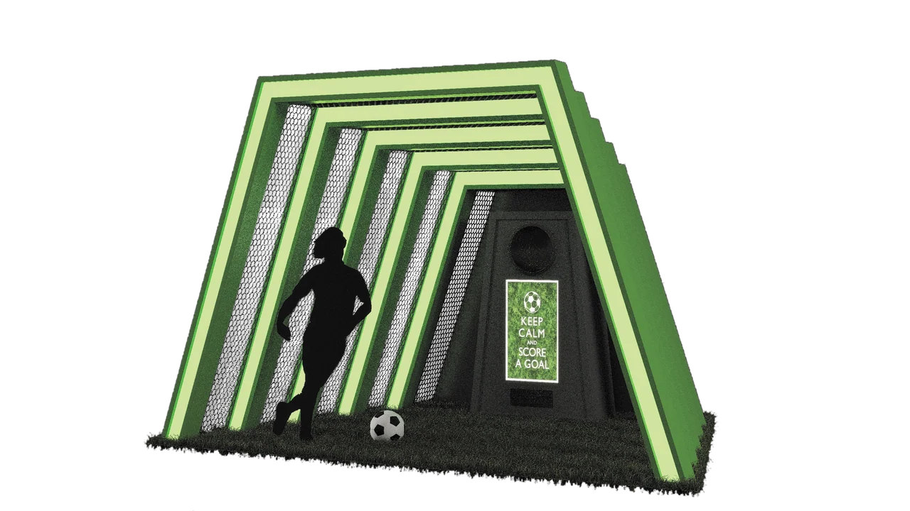
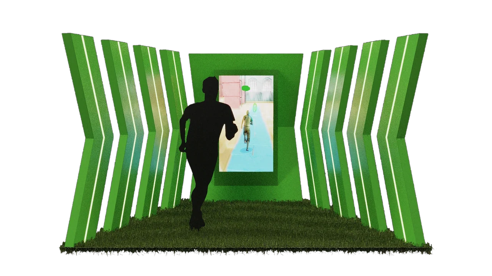

Repeated green structural forms
The PNGs preserve those saved composites at their full 2933 by 1650 pixel dimensions. No layer was hidden, no crop was taken and no raster retouching was applied.
A common palette for two spatial activity ideas.
Explore the story
Use repeated structural forms to frame different human-scale sports positions.
Angled green frames and mesh surround the football concept. Taller bent fins direct attention toward a portrait display in the separate running arrangement.
The PNGs preserve those saved composites at their full 2933 by 1650 pixel dimensions. No layer was hidden, no crop was taken and no raster retouching was applied.
The football concept contains a scale silhouette, turf-like base, layered frames, netting and a rear target/display unit. The second concept contains side fins and a portrait screen showing a runner image.
The football composition places a player silhouette and ball in front of a sequence of angled green frames.
Explore the complete compositions and interface states. Select any image for a closer look.
02 / PROJECT IMAGES
Select a view to explore.
Football activity concept with nested green frames, mesh, a turf base, player silhouette and a rear display or target unit.
Running-display concept with green side fins, turf flooring, a foreground silhouette and a portrait game screen.

Structure, interaction and visual decisions that give the work its character.
RoleConfirm scene adaptation, compositing, materials, rendering and presentation contribution separately from original geometry and game development.
AssetsThe named collaborator folder must remain a contribution question. The runner image, silhouettes, football artwork and any supplied models or textures require source credits. The campaign name in the parent path does not establish a client relationship or delivery claim.
StatusPrivate study of two selected sports-display composites. Concept ownership, geometry authorship, interaction, fabrication and delivery remain unverified.